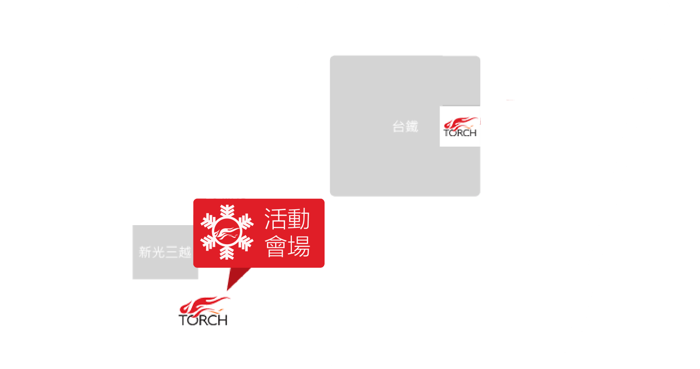

牧師阿伯說故事 充滿想像的故事新體驗
簡介 |坐在樹下聽故事，繽紛的佈置、書中人物現身現場，帶你進入充滿想像的故事世界！
活動資訊 |2016/12/17（六） 16:00-17:00
活動對象 |國小一到四年級
活動地點 | 火把辦公室十樓多功能教室（台北市許昌街42號10樓）
交通方式 | 捷運：可搭乘 2 淡水信義線 或 5 板南線 至臺北車站。
汽、機車：可停至臺北車站西側地下收費停車場。
公車：下車站牌 (站名：臺北車站-忠孝)
坐在樹下聽故事，繽紛的佈置、書中人物現身現場，帶你進入充滿想像的故事世界！
活動資訊 |2016/12/17（六） 16:00-17:00
活動對象 |國小一到四年級
活動地點 | 火把辦公室十樓多功能教室（台北市許昌街42號10樓）